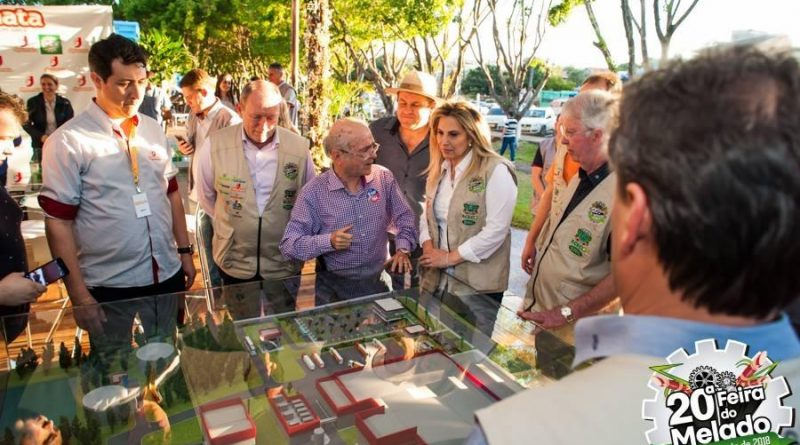
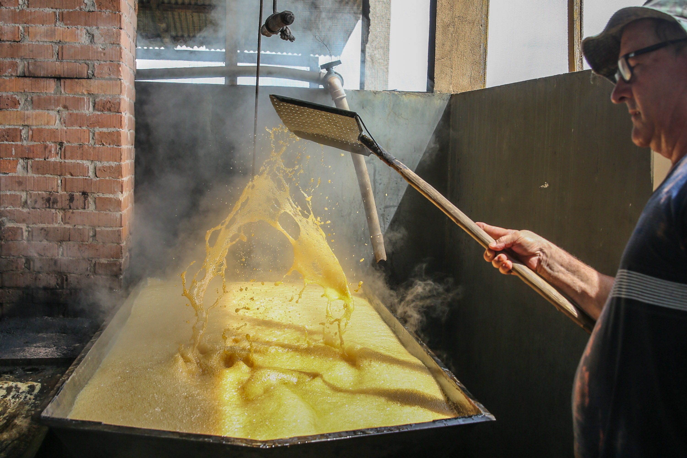
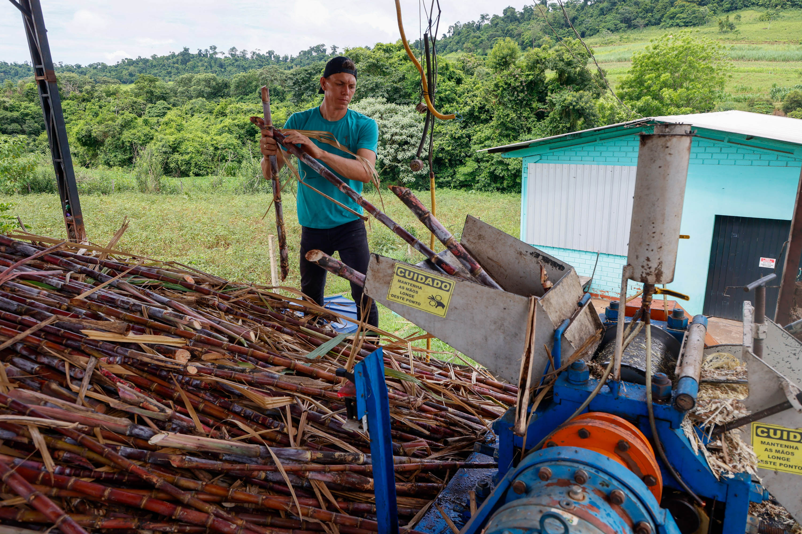
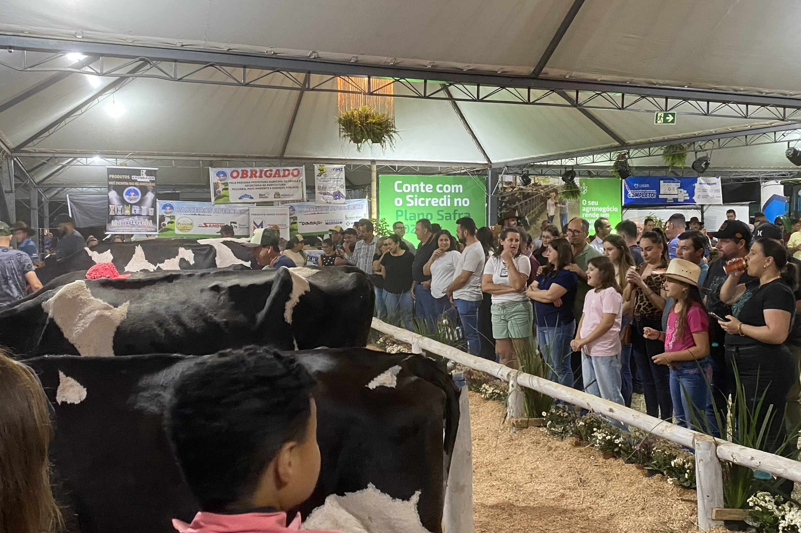

Preparação artesanal do meladoPalco principal do festivalVista da entrada do eventoApresentações musicais ao vivoPúblico reunido na praça centralDelícias da culinária localDegustação de melado artesanalDesfile cultural na feiraBarracas tradicionais na feiraShow musical regionalFamílias curtindo o eventoProdutos coloniais à vendaMelado espesso sendo fervidoPresença de autoridades no eventoTradição e cultura em destaqueBandas locais animando a festaMultidão prestigiando a feiraFeira de doces típicosProcesso de cozimento do meladoCrianças brincando na feiraPaisagens de Capanema decoradasShow com artistas locaisTuristas visitando a feiraVenda de produtos coloniaisMelado sendo envasadoFeira movimentada em dia ensolaradoDecoração típica da cidadeArtistas animando o públicoPúblico de todas as idadesProdutos derivados de leiteExposição de produtores locaisEncerramento da Feira do Melado
imagem-1.jpg)
imagem-2.jpg)
imagem-3.jpg)
imagem-4.jpg)
imagem-5.jpg)
imagem-6.jpg)